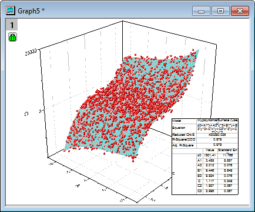

ユーザ定義関数で曲面フィット
サマリー
曲面のフィットを行うために、Originでは非線形曲面フィットの機能を利用できます。 組み込みの曲面フィット関数に加え、フィット関数ビルダーでユーザ自身でフィット関数を作成できます。
このチュートリアルでは、フィット関数ビルダーでのユーザ定義関数の作成方法と、NLFitツールを使用した非線形曲面フィットの実行方法について紹介します。
必要なOriginのバージョン: Origin 2016 SR0以降
学習する項目
このチュートリアルでは、以下の項目について説明します。
- フィット関数ビルダーで曲面フィット関数を作成する
- ユーザ定義フィット関数で非線形曲面フィットを実行する
ステップ
<Origin EXE Folder>\Samples\Curve Fitting\ のパスにあるデータPolynomialSurface.dat使ってフィットを実行します。
次のフィット関数を作成し使用します。
ここで、
 ：従属変数
：従属変数
 および
および  は独立変数
は独立変数
 はすべてフィットパラメータです。
はすべてフィットパラメータです。
曲面フィット関数を作成する
このセクションでは、フィット関数ビルダーを使用してユーザ定義の曲面フィット関数を作成する方法を説明します。もう一つのツール、フィット関数オーガナイザーでも、ユーザ定義の曲面フィット関数を作成することが出来ます。ツール：フィット関数オーガナイザー と選択、またはF9をキーボードで押してダイアログを開きます。
- Originを起動し、ツール：フィット関数ビルダーを選択（またはF8キーを押す）して、フィット関数ビルダを開きます。
- 処理のゴールページで、新しい関数の作成を選択し、進むボタンをクリックします。
- 関数名と関数形式のページで、関数カテゴリーの選択をSurface Fittingにします。これは、非線形曲面フィットツールでは、Surface Fittingカテゴリーにある関数しか使用できないためです。
- 関数名として、"MyPolynomialSurface"を入力し、関数形式を算術式にします。進むをクリックします。
- 変数とパラメータページで、変数とパラメータ名を下図のように入力し、パラメータボックスの進む
をクリックします。区切りにはカンマ”,”を使います。
- 式形式の関数ページで、以下の式を関数内容に入力します。
z0+A1*x+A3*x^3+B1*y+B3*y^3+C*x*y+C2*x^2*y+C3*x*y^2
- 予測された初期値を、このデータと関数に基づいたパラメータに与えます。
 |
- 実際にフィットを実行する前に、異なる初期値を与えることもできます。
- 評価ボタン
 をクリックして、関数が動作するか確認します（動作する場合、実際のyの値が返されます）。 をクリックして、関数が動作するか確認します（動作する場合、実際のyの値が返されます）。
|
- 完了ボタンをクリックして関数の定義を終了します。関数ファイル(.fdf) は、ユーザファイルフォルダに保存されます。
|
フィット関数ビルダーを使用して一度定義した関数を、あとから編集することもできます（その場合、最初に表示される処理のゴールページでフィット関数の編集を選択）。また、フィット関数オーガナイザを使用することもできます。
|
曲面フィットを実行する
- 新しいワークブックを作成します。
 ボタンをクリックして、<Origin EXEフォルダ>\Samples\Curve Fitting\のファイル PolynomialSurface.datをインポートします。
ボタンをクリックして、<Origin EXEフォルダ>\Samples\Curve Fitting\のファイル PolynomialSurface.datをインポートします。
- 列Cで右クリックして、列XY属性の設定：Zを選択します。
- ワークシートをアクティブにしたまま、解析：フィット：非線形曲面(3D)フィット...メニューを選択し、NLFit ダイアログを開きます。
- 関数選択のページで、カテゴリがSurfaceに設定され、読み取り専用になっていることがわかります。関数をMyPolynomialSurface(User)に設定します。
- フィットボタンをクリックしてフィットを実行します。
- 結果レポートシートか作成され、すべてのパラメータ値がパラメータ表に出力されます。元のワークブックには、ワークシートFitSurfaceCurveも追加されます。このシートには、フィット曲面のデータが入力されています。
- 元データのワークシートを開き、列Cを選択します。
 ボタンをクリックして3D散布図を作成します。ソースデータにフィット曲面を追加するために、レイヤ1アイコンをダブルクリックします。レイヤ内容ダイアログが開いたら、左のドロップダウンリストからフォルダ内のワークシートを選択します。FitSurfaceCurve1のFitZを選択し、グラフタイプを3D - 曲面に変更して右パネルに追加します。 下の右矢印をクリックして、データセットを右のパネルに追加します。
ボタンをクリックして3D散布図を作成します。ソースデータにフィット曲面を追加するために、レイヤ1アイコンをダブルクリックします。レイヤ内容ダイアログが開いたら、左のドロップダウンリストからフォルダ内のワークシートを選択します。FitSurfaceCurve1のFitZを選択し、グラフタイプを3D - 曲面に変更して右パネルに追加します。 下の右矢印をクリックして、データセットを右のパネルに追加します。
OKをクリックして曲面を追加します。
